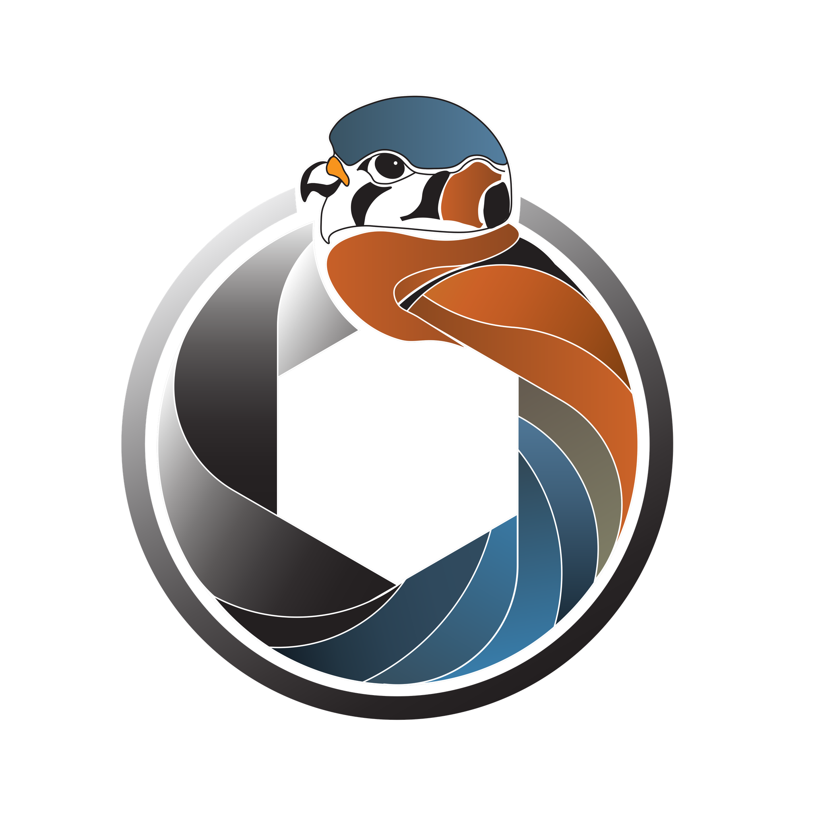

翎鉴
Lite
排序
拍摄时间
场景 ID
最高质量
图片数量
分组
按小时
按日
按周
不分组
全部
已接受
已拒绝
未处理
星级
★
★★
★★★
★★★★
★★★★★
手动评分
次级物种
文件夹分组
检测到当前功能受限。请使用翎鉴桌面版应用或基于 Chromium 的浏览器以获得完整体验。
选择文件夹开始
打开已分析的图库，或将新文件夹加入分析队列。
已选 0 个场景
合并所选场景
× 清除选择
任务中心
空闲
▲
暂停
取消
清除已完成
实时详情
—
✏️
✓
✗
⌨ 快捷键
✂ 拆分
✕ 关闭
←
→
切换图片
Ctrl
+
←
→
跳到开头/结尾
Tab
下一个场景
Ctrl
+
Tab
上一个场景
Z
接受
X
重置
C
拒绝
1
–
5
评分
Space
在编辑器中打开
Esc
关闭
鸟体裁切图
请选择一张图片…
完整图片
请选择一张图片…
RAW 缩放
—
—
✓ 接受
未决定
✗ 拒绝
正在加载翎鉴…
模型正在加载，分析即将开始。
界面
评分
分析
数据
界面与编辑器
界面缩放
100%
按比例缩放所有界面元素和文字（75%–150%）。
首选编辑器
系统默认
Darktable
Adobe Lightroom Classic
Adobe Photoshop
Capture One
Affinity Photo
GIMP
RawTherapee
Luminar Neo
DxO PhotoLab
ON1 Photo RAW
ACDSee
PaintShop Pro
FastStone Image Viewer
XnView MP
IrfanView
自定义应用…
选择 Kestrel 在打开原始文件时所使用的编辑器。
应用路径
浏览…
应用程序可执行文件的完整路径。
星级评分系统
评分方案
非常严格
严格
均衡（推荐）
宽松
非常宽松
控制画质分数如何转换为星级评分。
分析设置
检测置信度阈值
鸟类检测器的最低置信度（0.10–0.99）。
场景分组阈值（秒）
拍摄时间相差不超过该秒数的图片视为同一场景。
掩码分割阈值
掩码分割置信度阈值（0.50–0.95）。
数据与预览
缓存 RAW 预览图
启用
缓存 RAW 预览以加快加载速度。
禁用 RAW 曝光修正
禁用
查看未经曝光修正的 RAW 数据。
自动保存更改
启用
自动保存评分、标签和场景修改。
目录树扫描深度
分析对话框中扫描子目录的层数（1–6）。
合并场景
选择场景
目标
使用最小 ID
ID：
至少选择两个场景后才能合并。
取消
合并
分析文件夹
勾选要加入分析队列的文件夹。
●
已完成
●
版本过旧
●
分析中
●
未开始
● 淡色 = 无照片
浏览文件夹
更换文件夹…
正在扫描文件夹…
队列预览
勾选左侧文件夹后即可把它们加入分析队列。
启用硬件加速（CoreML）
（实验性）除鸟类外，也检测其他野生动物
实时分析：
–
× 关闭
缩略图
检测结果
主要检测结果
导出照片
仅导出已接受的照片
导出所有标记为"接受"的照片
按星级分文件夹导出
创建 star-1 至 star-5 子文件夹
写入 XMP 元数据
将评分和筛片结果写入 .xmp 旁车文件
目标文件夹
浏览…
导出中…